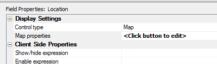
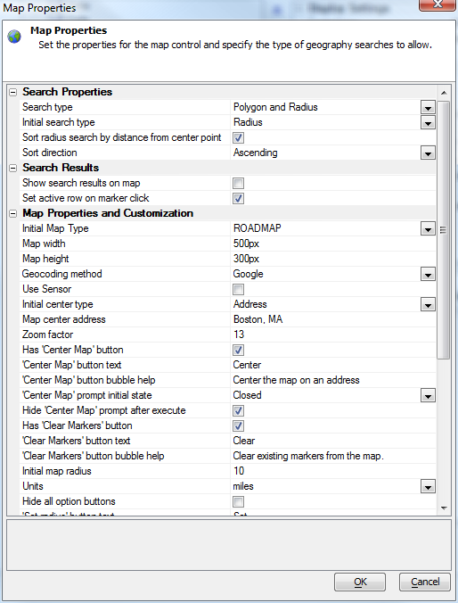
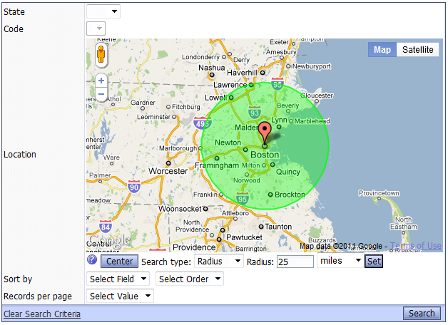

Web Grid Geographical Search
You can use a map control in the Search Part of a Grid to enter points for a polygon search or to specify the center point and radius for a radius search.To use a geographic search, your SQL database must support geography types, and your grid must be based on a query that includes a geography field. You need to include the geography field in your search part, and set its control to a map.

Then set your map properties for the search.

Set the properties and test the control. You can display the results in the grid, in a map that is an alternate view to the grid, and/or in the search grid itself.

Your users will not have to worry about putting the points on a search polygon in the right order or closing the polygon, as the search component takes care of both requirements automatically.
Don't try to use more than one map search per grid.
Virtual Grid field '*distanceFromCenterPoint'
In the case of a 'Radius' search, it would be useful to be able to order the records found by the search by distance from the center point. In order to support this functionality, a new 'virtual column' has been introduced. When you create the SQL statement for the Grid, you can include a new virtual column called '*distanceFromCenterPoint'. For example:SELECT Name, Address, City, State, Zip, '*distanceFromCenterPoint' AS DistanceFromCenterPoint FROM StoreLocations
When the Grid is executed and a Radius search is in effect, the virtual field is replaced by the correct Portable SQL. For example:
SELECT Name, Address, City, State, Zip, GeogDistanceBetween(location, GeogCreateFromText('POINT ( -71 42)') ) AS DistanceFromCenterPoint FROM StoreLocations
In the above example the longitude and latitude values (-71 and 42) would, of course, be replaced with the longitude and latitude of the map center point when the user submitted the search.
When no Radius search is active, the Grid will just render a blank value for the virtual field.
You can order the markers by distance from the center point simply by checking the appropriate option on the map search part properties. You only need to explicitly add the virtual field '*distanceFromCenterPoint' to the SQL query and reference it from the Grid builder if you want to display it on the Grid.
The unit of distance for Geography in the database is typically meters. You can convert that to miles or kilometers, and limit the number of decimal points displayed, by creating a display format expression for the Grid column that displays the distance. For example, the following formatting expression converts the value from meters to kilometers, with 2 decimal places.
alltrim( str ( convert_type ( <value>, "N" )/1000, 20, 2 ) )
The unit of distance for Geography in the database is typically meters. You can convert that to miles or kilometers, and limit the number of decimal points displayed, by creating a display format expression for the Grid column that displays the distance. For example, the following formatting expression converts the value from meters to kilometers, with 2 decimal places.
alltrim( str ( convert_type ( <value>, "N" )/1000, 20, 2 ) )
getMapDataFromSearchPart()
If your Search Part has a Map control type, you can use this Grid method to extract data from the map:{grid.object}.getMapDataFromSearchPart()
This can be useful if you are doing an Ajax callback and you want to submit data from the Map control. The data that is returned by this Javascript method is in the form of a query string, i.e. name/value pairs separated with '&' characters.
Videos:
See Google Map Alternate View V11, video GM10 onwardsSee Also
Using the Google Map as a Grid search controlSearching Geography Fields in the Grid
Web Grid Alternate Views V11